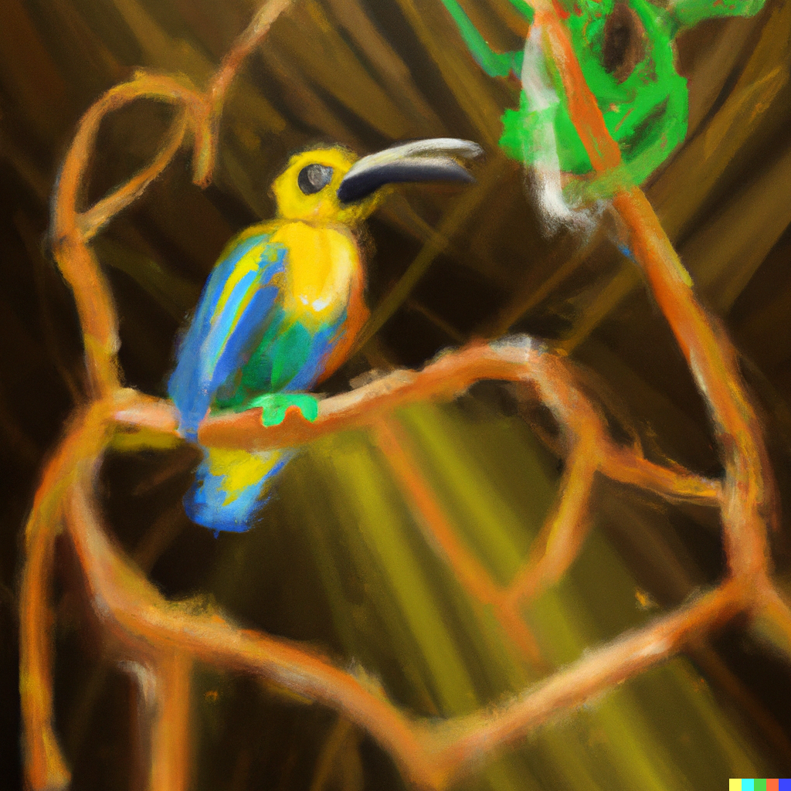

In Rot stehen jeweils unsere Frage an Peer-Evaluator:innen:
Oben an der Seite werden wir ev. eine Population Clock (https://www.worldometers.info/world-population/) und eine Artensterbe Clock anzeigen (pro Tag sterben rund 150 Arten aus und 50 neue werden entdeckt!). Ev. auch noch m2 Regenwaldrodung, m2 Versiegelung, Menge verkaufte Pestizide...
Unten an der Seite angelangt, würde dann dem User mitgeteilt, wie viel mehr Menschen, wie viel weniger Arten, wie viel weniger Regenwald etc. seit dem Besuch der Webseite.
Frage an Peer-Evaluator:innen: Brauchts das? Welche Clocks fändet ihr besonders interessant?
Oben an der Seite werden wir ev. eine Population Clock (https://www.worldometers.info/world-population/) und eine Artensterbe Clock anzeigen (pro Tag sterben rund 150 Arten aus und 50 neue werden entdeckt!). Ev. auch noch m2 Regenwaldrodung, m2 Versiegelung, Menge verkaufte Pestizide...
Unten an der Seite angelangt, würde dann dem User mitgeteilt, wie viel mehr Menschen, wie viel weniger Arten, wie viel weniger Regenwald etc. seit dem Besuch der Webseite.
Frage an Peer-Evaluator:innen: Brauchts das? Welche Clocks fändet ihr besonders interessant?

Weltweit werden jedes Jahr Rankings über die Lebensqualität und das
Wohlergehen des Menschen publiziert.
In fast allen thront die Schweiz in den obersten
Rängen.
Wir haben uns gefragt, wie es dabei eigentlich den andern Lebewesen ergeht.
Gehts dem Mensch gut - geht's dem Rest schlecht?
Vergleiche wie sich die Lebensqualität für Mensch und Tier weltweit verhält:
Exkurs: Wie entsteht der Quality life index?
Im "Quality of Life Index" der OECD werden acht verschiedene
Indices
verrechnet und
unterschiedlich gewichtet. Unter anderem wirtschaftliche,
soziale und ökologische Faktoren Die vier blauen Indices werden positiv
verrechnet, die
roten
negativ. Schauen
Sie, weshalb die Schweiz am Schluss zuoberst thront.
Ist Ihnen etwas aufgefallen?
Der Lebenshaltungskostenindex, in dem die Schweiz den letzten Platz belegt,
wird am wenigsten stark gewichtet. Auch das Verhältnis von Immobilien zu
Einkommen wird nicht stark gewichtet. Wer hat wohl diese Gewichtungen vorgenommen?

Wo lebt es sich in Europa am Besten und wo wirds eng..
..und
vorallem für wen?
Ein nettes Leben für
die Menschen...
...und etwas weniger für
Frage an Peer-Evaluator:innen:
Tierarten rechts: Lieber eine ganz grosse Karte mit Dropdown oder viele kleine nebeneinander?
Wäre das noch interessant? bei den Tierarten noch eine Option für Anzeige
Landschaftszusammenstellung (Wald/Meer/LAndwirtschaft etc).
Brauchts das? Oder evtl. auf Click einen Drawer mit Infos öffnen?
Zoom in/ out?

Wie fest sind die einzelnen Arten
Wie fest sind die einzelnen Arten
in der Schweiz gefährdet?
Die folgende Treemap zeigt uns die Anzahl
der Arten pro Gefährdungsgrad.
Info: Die folgende Treemap ist leider nicht interaktiv, aber sie soll zeigen,
dass es unterschiedliche Gefährdungsgrade gibt, und dass eine beträchtliche Zahl von Arten
vom Aussterben bedroht sind
Wäre das noch interessant? bei den Tierarten noch eine Option für Anzeige
Landschaftszusammenstellung (Wald/Meer/LAndwirtschaft etc).
Brauchts das? Oder evtl. auf Click einen Drawer mit Infos öffnen?
Zoom in/ out?
TBD: Farblegende gelb: Mensch; starkes Rot: vom Aussterben
bedroht; helleres
Rot: stark
bedroht; noch helleres Rot: bedroht; Blau: nicht bedroht

Das Ganze nun auf die Säugetiere heruntergebrochen.
Von welchen gibt es den überhaupt am Meisten
auf der Erde?
TBD:
Die Einzelnen Kacheln repräsentieren die Biomasse der jeweiligen Art. Zahlen entsprechen
Prozentwerten.
Eine idee ist, dass die Treemaps mit icons der entsprechenden Tiergruppe ergänzt werden. Wäre das fürs Verständnis hilfreich? Oder Tooltips mit mehr Infos?
Eine idee ist, dass die Treemaps mit icons der entsprechenden Tiergruppe ergänzt werden. Wäre das fürs Verständnis hilfreich? Oder Tooltips mit mehr Infos?

Aber warum gehts scheinbar genau dort den Menschen gut,
wo die Tiere ums Überleben kämpfen?

Weniger Naturschutz
Seit XYZ hat .....politik..ngos, turismus..die schweiz verglichen zu italien hat nur 0.6% (tbd richtiger wert) der fläche unter naturschutz...... etc..tbd
Mehr Industrie & Agrarflächen
In industrienationen ... tbd ... veränderung seit 1900...
Mehr Menschen
Seit 1900...erreichen 2025 9mia...seit beginn artikel lesen xxx-mehr menschen...
Klimaveränderungen
CO2... Lebensräume.. umkämpft. tbd.
Folgende Grafik zeigt wie sich die Lebensräume und die Population der Schweiz seit 1900
markant verändert haben.
Hier wird evtl. auch auf den Counter von ganz oben referenziert...
während lesen/scrollen sind z.b. 3min vergangen..d.h 0.2 Arten ausgestorben, 20km2 Regenwald gefällt, 5000 neue Menschen geboren etc.
während lesen/scrollen sind z.b. 3min vergangen..d.h 0.2 Arten ausgestorben, 20km2 Regenwald gefällt, 5000 neue Menschen geboren etc.
Zeitliche Entwicklung seit 1900 Bevölkerung, Landwirtschaft, Maschinengewicht, Mobilität, Tierarten etc. (optional falls noch Zeit)
TBD: Hier werden Gründe für die Dominanz des Menschen in der Schweiz und die
Verdrängung der
Tiere in zeitlichen
Entwicklungen aufgezeigt. Es
wird immer eine Grösse die sich positiv entwickelt, einer anderen Grösse gegenübergestellt,
die sich negativ
entwickelt und offensichtlich mit
der anderen Grösse zu tun hat. z.B. Mobilität: Anzahl Fahrzeuge auf den Strassen;
Zerstückelung der
Landschaft.
Entweder werden die verschiedenen Entwicklungen mit einem Dropdown Menu angewählt oder in
einem
Scrollytelling erklärt.